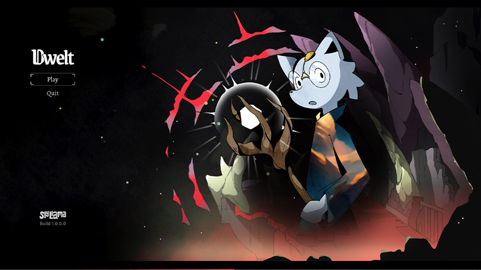
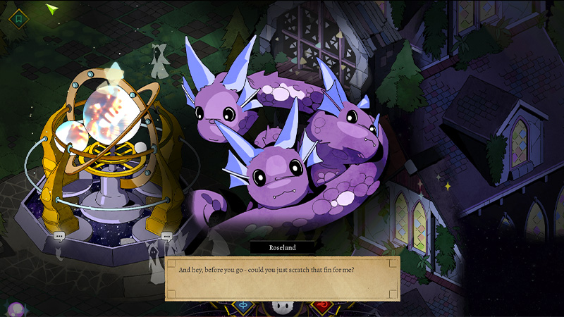
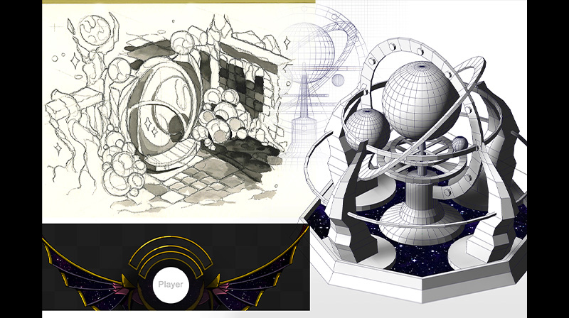
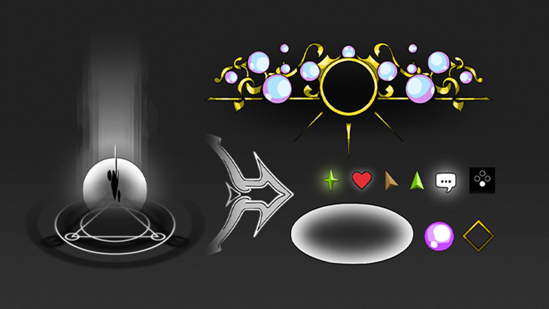
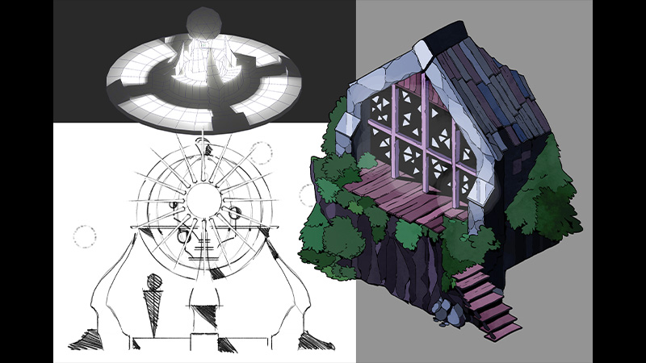
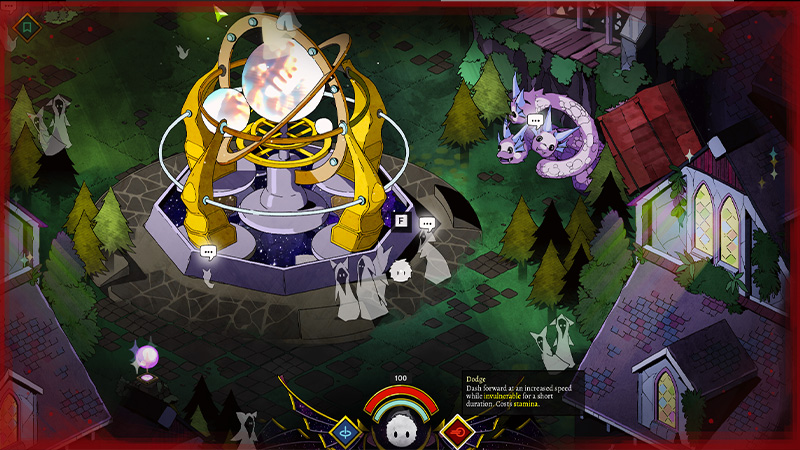

Dwelt
Dwelt has been a conceptual continuation of the ideas first practically explored in Scruffy! Most of what we could say about it is on that page, so here are some screenshots instead.
Meet Roselund, our (big) little hydra. She is very wise! This was modeled in Blender first, and then traced over.
Some concepts for the more astral components of the game. It was fun to work on a good old-fashioned watercolour block after going digital for so long.
Various UI elements and visual game mechanic components. These were very rewarding to make - we want to explore UI further.
More architectural concepts! Again, we've found a fun workflow starting in Blender and then working over guide renders.
A screenshot of the game as it actually runs.